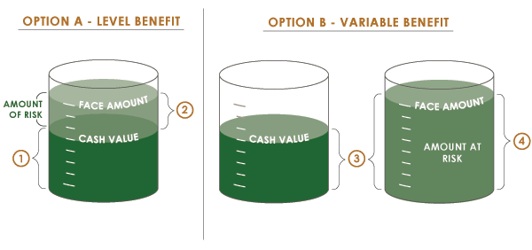

Within limits, the policy owner can determine the face amount of the policy upon issue. After a period of time, the owner may request to change the face amount, but a request for an increase typically must be accompanied by evidence of continued insurability. Interestingly enough, the request for a decrease in coverage will also require the insurer's approval to make sure that the cash value is not so great in comparison to the face amount of the policy that it would lose its status as an insurance product and instead become an investment product, thereby losing the tax deferral aspect of the contract.
At the time of purchase, the owner also decides if the death benefit will be level or will vary with the changes in the cash value. To understand the significance of these choices, refer to the diagrams below.Click each number to learn more.
